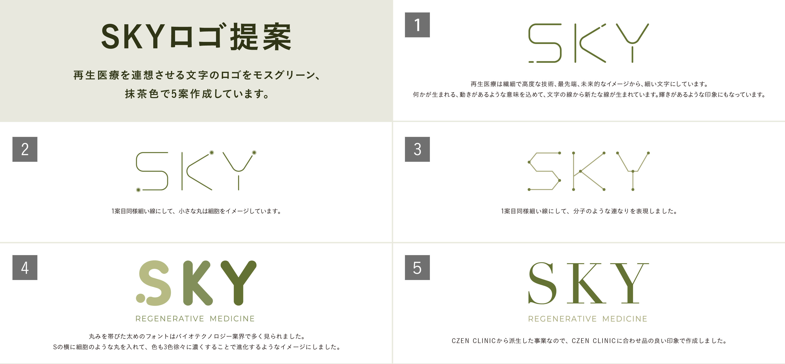
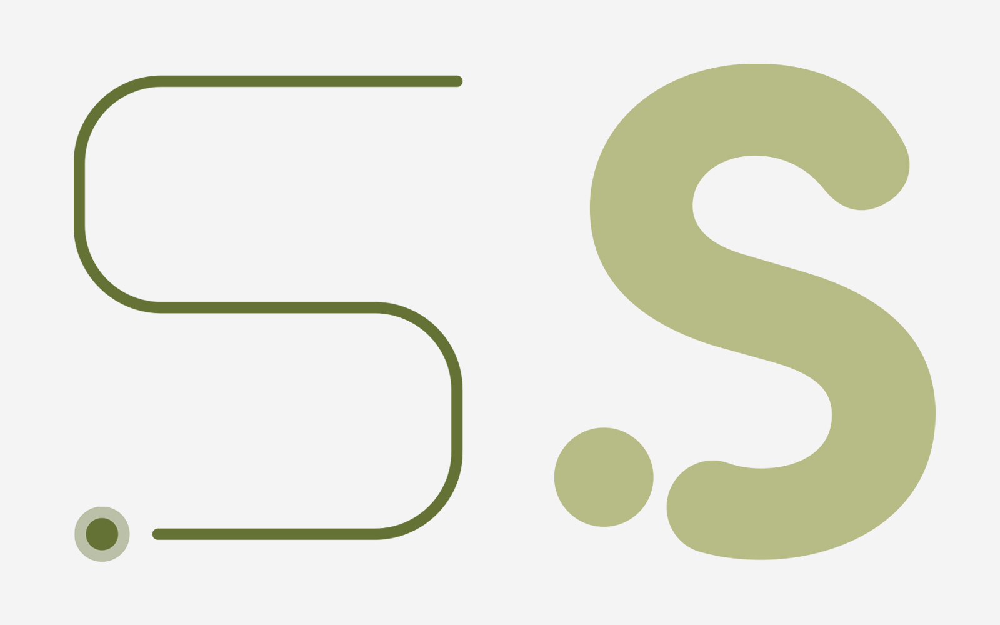
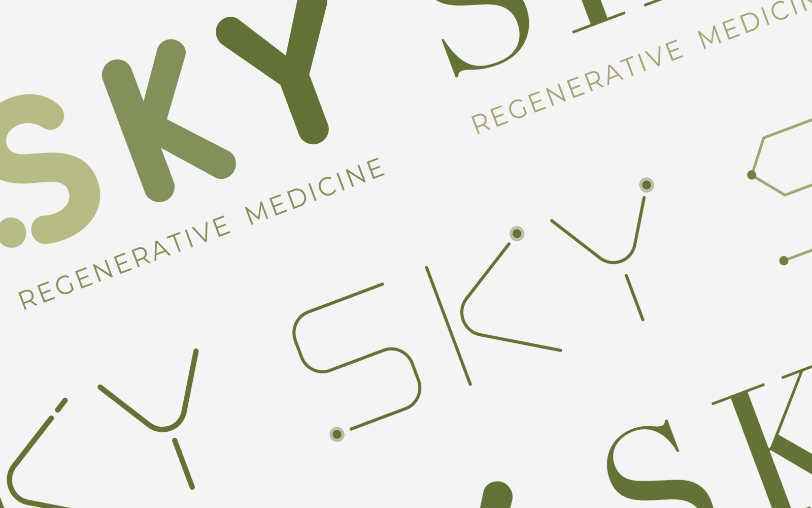

Graphic
CZEN CLINIC新規事業SKYロゴ提案

CZEN CLINIC新規事業SKYのロゴを作成
background
制作背景
グループ会社の美容クリニックから派生した、再生医療事業の立ち上げに伴いロゴデザインを制作。
資料への掲載が急遽必要となったため、限られた時間の中で方向性の異なる5案を制作・提案した。
detail
制作について
「SKY」の文字を使用した文字ロゴとし、シンボルマークは使用しないことが要件。
既存ブランドとのつながりを意識した案に加え、再生医療から連想した「細胞」「分子」「進化」「先端性」などを表現した案を制作。
提案した5案のうち、既存ブランドとの親和性を重視した5案目が採用された。
制作のポイント

POINT1
再生医療を表現したタイポグラフィ
細いラインや円形のモチーフを文字に取り入れ、細胞や分子のつながり、先端医療の繊細さを表現。
シンボルマークを使用せず、文字そのものに特徴を持たせた。

POINT2
5つの方向性を提案
再生医療から連想した「最先端」「細胞」「分子」など、それぞれ異なるコンセプトで5案を制作。
短時間で比較・検討できるよう、文字ロゴの中で表現の幅を持たせた。

POINT3
既存ブランドとのつながり
採用された5案目では、CZEN CLINICで使用されているセリフ体の印象を取り入れ、上品で信頼感のあるデザインに。
新規事業でありながら、既存ブランドとのつながりを感じられるロゴに仕上げた。